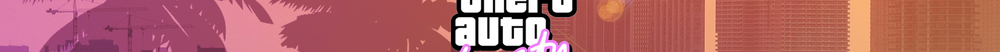
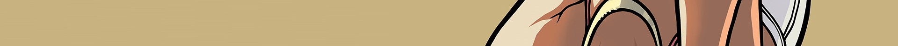
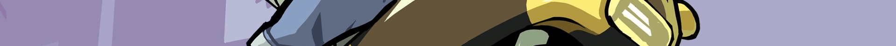
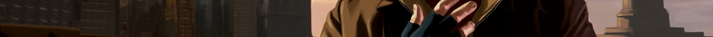
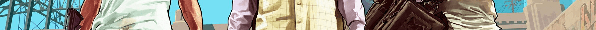
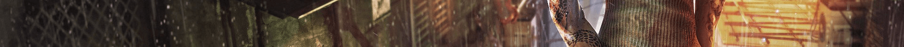
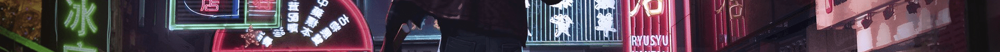

Die Liberty City Triaden sind eine Gang ostasiatischen Ursprungs in Portland, Liberty City. Obwohl die Triaden eine kleine Straßengang zu sein scheinen, ist es offensichtlich, dass sie sich im organisierten Verbrechen versuchen. Zum Beispiel in Erpressung, vor allem bei Mr. Wongs Wäscherei, die der Ursprung vieler Probleme für die Leone-Familie war. Zusätzlich verkaufen sie Drogen für das Kolumbianische Kartell über „Chunky“ Lee Chong. Sie besitzen auch die Turtle-Head-Fischfabrik in Callahan Point, Portland Island. Ein Krieg zwischen den Triaden und der Leone-Familie brach aus, als die Triaden versuchten, bei Leone-Geschäften in Chinatown mitzumischen. Der Krieg endete, nachdem drei der Triaden-Kriegsherren ermordet wurden und ihre Fischfabrik von einer Mafia-Müllabfuhr-Bombe zerstört wurde (interessanterweise gehörte das Lagerhaus im Jahre 1998 zur Leone-Familie, bis die Triaden es in die Luft jagten). Während es falsch ist, zu sagen, die Triaden seien in Liberty City völlig ausgelöscht, wurden sie doch irreparabel geschwächt, da sie ihre mächtigste Tarnung verloren haben.
Die Vice City Triaden (engl. Triads) sind eine Gang aus Grand Theft Auto: Vice City, die nur beiläufig während der Mission Der Singvogel erwähnt wird. Über sie ist nur bekannt, dass sie im Falschgeld-Geschäft mitmischt, und ein in Florida gelegenes, nicht weiter spezifiziertes Geldfälscher-Syndikat mit Druckplatten für Geld beliefert. In der bereits genannten Mission Der Singvogel muss Tommy in ein Containerschiff eindringen und dem Boss der Bande Informationen über den Verbleib einer Schiffsladung Druckplatten entlocken. Die Gang führt eine Reederei in Viceport, wo sie von einem Schiff aus operiert.
Blood Feather Triads Die Blood Feather Triads (dt. Blut-Feder-Triaden) sind eine Triaden-Gruppe aus Grand Theft Auto: San Andreas in San Fierro. Sie wird in der Mission Mountain Cloud Boys bei einem Treffen mit dem Red Gecko Tong fast vollkommen ausgelöscht, wofür die Da Nang Boys verantwortlich sind. Wu Zi Mu und CJ töten nach dem Massaker die Täter.
Die Mountain Cloud Boys (auch Mountain Cloud Triaden oder San Fierro Triaden) sind eine große Gang aus Grand Theft Auto: San Andreas, die in Hongkong entstand und an einem gewissem Zeitpunkt nach San Fierro übergesiedelt ist. Anführer der Gang ist der blinde Wu Zi Mu. Die Mountain Cloud Boys sind stark im Gemeinschaftsunternehmen involviert und vermeiden einen Konflikt zwischen den einzelnen Triaden-Gruppen in San Fierro. Die Triaden sind ebenso mit den Grove Street Families verbündet und sind Feinde der verschiedenen Mafia-Familien, den Da Nang Boys und dem Loco-Syndikat. SF-UR ist ihr Lieblingsradiosender.
Die Red Gecko Tong (dt. "Rote-Gecko-Zange" wobei "Tong" wohl eher ein Wortspiel aus "Tongue" ist, was "Zunge" heisst) ist eine Triaden-Gruppierung aus Grand Theft Auto: San Andreas, die im Spiel keine wesentliche Rolle spielt. Ihr Anführer, Ran Fa Li, vergibt an Carl Johnson zwei Missionen, diese heißen Ran Fa Li und Lure. Allzu schwer sind beide Aufträge nicht und selbst Ran Fa Li kommt nach seiner Schlussmission Lure nur noch ein Mal vor, und zwar erst später in Las Venturas in der Zwischensequenz zu Fish in a Barrel. Die Red Gecko Tong steht auf Kriegsfuß mit der Vietnamesen-Bande Da Nang Boys und ist mit der Triaden-Gruppen Mountain Cloud Boys verbündet, die von CJs Freund und Auftraggeber Wu Zi Mu geleitet wird. Bilder der Bandenmitglieder gibt es nicht, da sie nicht in San Andreas vorkommen.
Die Triaden spielen eine Hauptrolle in Grand Theft Auto: Chinatown Wars. Da Hsin, das Triaden-Oberhaupt, bereits alt war, musste er bald einen Nachfolger bestimmen. Zhou, Chan und Wu Lee waren die drei Personen, die den Posten bekommen wollten. Die Triaden fanden später heraus, dass eins ihrer Mitglieder ein Maulwurf war. Es gab verschiedene Theorien, von welcher Gang der Maulwurf sein könnte. Man nahm zu Beginn an, die Angels of Death oder die Midtown Gangster würden den Maulwurf schützen. So schickten die Triaden beispielsweise einen Privatdetektiv zu den Angels of Death und ließen mehrere Anführer der Midtown Gangster enthaupten. Zu der Zeit fing ein Triaden-Mitglied an, für einen Undercoverpolizisten zu arbeiten. Dieser hatte einen Freund beim FIB, der ihnen bei der Suche nach dem Maulwurf geholfen hat. Dieser Freund wurde allerdings nach einiger Zeit von der Dienstaufsicht in die Mangel genommen, weshalb sich Huang Lee in die Hauptcomputer des FIB hacken musste um herauszufinden, was er und Wade wissen wollte. So fand Huang heraus, dass das FIB angeblich mit zwei Leuten gesprochen hatte: Zhou Ming und Chan Jaoming. Beide wurden kurz darauf von den Triaden ermordet – doch sie waren keine Maulwürfe. Wade und Huang fanden heraus, dass Wu „Kenny“ Lee der eigentliche Maulwurf ist. Er hatte, nachdem Chan und Zhou getötet wurden, keine Konkurrenz mehr, um das neue Triaden-Oberhaupt zu werden. Er wurde in der Schlussmission nach einer Verfolgungsjagd quer durch Liberty City von seinem Neffen Huang ermordet. Nach Kenny´s Tod ist unbekannt wer die Triaden weiter anführt, oder besser gesagt die Untergruppe der Lee- Triade, eventuell könnte Huang der neue Anführer der Lee- Triade oder sogar Triadenoberhaubt sein. Hsin Jaoming meinte nämlich kurz vor seiner Verhaftung, dass er sich Huang gut als Triadenoberhaupt vorstellen könnte. Das Gangfahrzeug der Triaden ist der Hellenbach und ist immer rosa lackiert und hat ein blaues Neonlicht. Mitglieder, die zu Fuß unterwegs sind, erkennt man an ihrer ebenfalls rosafarbenen Kleidung. Zu den Geschäften der Triaden gehört der Drogenhandel und -schmuggel, Schutzgelderpressung und Geldwäsche. Die Hauptversorgungsquelle der Triaden ist Valion, deren bevorzugte Ware ist Heroin.
Die Triaden (engl. Triads, auch Algonquin Triads) sind eine Gang aus Grand Theft Auto IV und deren Episoden, sie sind in Algonquin anzutreffen. Sie sind außerdem stark im Heroinhandel und -schmuggel involviert. Laut der LCPD-Datenbank gibt es drei Triaden-Untergruppen: die Jaoming-, die Ming- und die Lee-Triaden. Obwohl sie in GTA IV keine Rolle oder Ähnliches spielen, beliefert angeblich die Jaoming-Triade die Angels of Death und den Koreanischen Mob mit Heroin. Die Triaden tauchen in der GTA-IV-Story mehrmals auf, zum Beispiel in Harboring a Grudge. Dort kommt in den Algonquin-Docks gerade eine Drogenlieferung von ihnen herein, die nach einer großen Schießerei von Niko und Packie gestohlen wird. Den zweiten und letzten Auftritt haben die Triaden in Truck Hustle. Dort stiehlt Niko im Auftrag von Phil Bell einen Heroin-Truck der Triaden, nachdem er ihn nach einer spektakulären Aktion „übernommen“ hat. In The Lost and Damned und The Ballad of Gay Tony haben sie außerdem einen Auftritt in den chronologisch aufeinanderfolgenden Missionen Chinese Takeout (The Ballad of Gay Tony) und This Shit’s cursed (The Lost and Damned), in denen sich Luis Lopez und Anthony Prince bzw. Johnny Klebitz und Jim Fitzgerald sich einen Weg durch einen Haufen Triaden bahnen müssen.
Die Triaden (engl. Triads) sind ein chinesisches Verbrechersyndikat aus Grand Theft Auto V und Grand Theft Auto Online. Sie werden vom alten Wei Cheng angeführt und zählen zu den Antagonisten von GTA V. Ziemlich früh in der Handlung während der Mission Trevor Philips Industries organisiert Ron ein Treffen mit Trevor und den Triaden in einem Motel in Sandy Shores. Es geht darum, dass die Organisation mit Trevor in dessen Drogengeschäft einsteigen will. Trevor sieht darin eine Möglichkeit, ans große Geld zu kommen. Wenig später steigen die Triaden jedoch mit Elwood O’Neil stattdessen ins Geschäft ein. Dies macht Trevor sehr wütend, sodass dieser zur O’Neil-Farm fährt und sämtliche O’Neil Brothers auslöscht und sogar deren Haus anzündet. Elwood, der Kopf der Bande, überlebt jedoch und führt den Handel mit den Triaden weiter fort. Einige Zeit später werden auch Elwood und die restlichen O’Neils nach einer Verfolgungsjagd im Raton Canyon eliminiert. Dies zieht den Hass der Triaden auf Trevor, sodass Michael entführt wird. In der Mission Frischfleisch macht Franklin seinen Freund Michael in einer Fleischfabrik ausfindig und befreit diesen, wobei einige Triadenmitglieder erschossen werden. In Option A der Finalen Mission können die Triaden nach Trevors Tod frei in Blaine County operieren. Steven Haines sorgt dafür, das die Triaden Michael und Franklin in Ruhe lassen. In Option B der Finalen Mission können sich die Triaden durch Trevors Präsenz weiterhin nicht nach Blaine County ausbreiten, jedoch sorgt Devin Weston dafür das die Triaden Trevor und Franklin in Ruhe lassen. In Option C der Finalen Mission wird der Krieg mit den Triaden endgültig bereinigt, indem Franklin den Anführer des Syndikats, Wei Cheng, zusammen mit seinem Sohn Tao Cheng und auch dessen Übersetzer erledigt.
Sleeping Dogs ist ein von United Front Games mit Unterstützung von Square Enix London Studios entwickeltes Action-Adventure in einer offenen Spielwelt. Es thematisiert die Undercover-Mission des Polizisten Wei Shen gegen die Triaden in Hongkong. Es kam 2012 für Windows, Xbox 360 und PlayStation 3 auf den Markt. In Deutschland erschien das Spiel in einer gewaltreduzierten Form, die internationale Fassung wurde von der Bundesprüfstelle für jugendgefährdende Medien indiziert. 2014 erschien eine überarbeitete Definitive Edition für Windows, Xbox One und PlayStation 4, 2016 auch für macOS. Ursprünglich wurde das Spiel im Auftrag des Publishers Activision unter dem Namen True Crime: Hong Kong entwickelt und sollte damit als Nachfolger von True Crime: Streets of LA und True Crime: New York City erscheinen. 2011 wurden diese Pläne von Activision aber wieder fallen gelassen und die Finanzierung eingestellt, bis Square Enix das Projekt übernahm, aufgrund fehlender Namensrechte aber umbenennen musste.
Triad Wars ist ein abgebrochenes Open-World- Online-Multiplayer- Videospiel, das von United Front Games in Zusammenarbeit mit den Square Enix London Studios entwickelt und von Square Enix veröffentlicht wurde. Es sollte ein Spin-off des 2012er Videospiels Sleeping Dogs und der zweiten Folge der Sleeping Dogs- Reihe sein. Das Spiel hatte traditionellere Multiplayer-Online- Spielelemente als Sleeping Dogs , mit dem zentralen Ziel, "als krimineller Kingpin der Triaden-Unterwelt an die Macht zu kommen". Es enthielt dieselbe Karte wie das OriginalSchlafende Hunde.